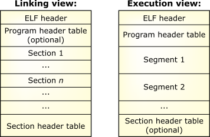

To understand how a program makes use of shared objects, let's first see the format of an executable and then examine the steps that occur when the program starts.
In the following diagram, we show two views of an ELF file: the linking view and the execution view. The linking view, which is used when the program or library is linked, deals with sections within an object file. Sections contain the bulk of the object file information: data, instructions, relocation information, symbols, debugging information, etc. The execution view, which is used when the program runs, deals with segments.
At link time, the program or library is built by merging
together sections with similar attributes into segments.
Typically, all the executable and read-only data sections
are combined into a single text segment,
while the data and BSS
s are combined into the
data segment. These segments are called
load segments, because they need to be loaded in
memory at process creation. Other sections such as symbol
information and debugging sections are merged into other,
nonload segments.

QNX OS, however, doesn't rely at all on the COFF technique
of loading sections. When developing our ELF implementation,
we worked directly from the ELF specification and kept efficiency
paramount. The ELF loader uses the execution
view
of the program. By doing so,
the loader's task is greatly simplified: all it has to
do is copy to memory the load segments (usually two) of the
program or library. As a result, process creation and
library loading operations are much faster.